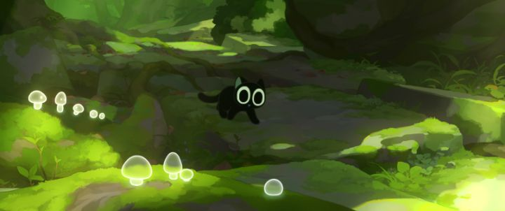

Disclaimer: This review is of the 2019 animated film "The Legend of Hei," also known as a prequel to a Flash webtoon-series with the title "The Legend of Luo Xiaohei." Japan might be the animation-hub of Asia (if not the world), but China's been having a successful resurgence in the late 2010's, with big-budget animated features, largely driven by ambitious and talented indie directors and studios. One such example is 2019's "The Legend of Hei," a Flash-animated feature that miraculously got a Western release from Shout Factory. Most Americans will completely miss it (at this time in 2021, there's not even a Wikipedia article for it), but it was apparently a big hit in China. The director, Zhang Ping (known as MTJJ online), made it as a prequel to his online series and comic, using funding from the existing success of his franchise.The thought of Flash might give one pause, and yes, it appears to be used for this feature film too. But despite the decades of cheaply-done Internet work, recent features have shown it can be effective when used properly. "The Legend of Hei" does have some problems with its visual identity, but is a great animation showcase, and a fun accessible action movie for families.Set in modern-day China, we are introduced to Hei, a shape-shifting "Spirit" that prefers to spend his time as a cute black-ball of a cat. When threatened, he can transform to a massive monster cat, and after watching humans for a long time, he can change into a convincing human boy. Originally living peacefully in the forests, he's forced to live in the alley of human cities when the trees are cut down for new buildings. After living alone for so long, a new Spirit named Stormand discovers him and brings him to other Spirits. For the first time, Hei doesn't feel alone as they live on the outskirts of the city.However, a mysterious warrior named Infinity attacks them, aiming for Stormand. Hei gets left behind, and Infinity keeps him captive as they venture back to the Guild, an organization that watches over the activity of Spirits. Traveling together for most of the movie, Hei learns that the Guild might not be as evil as it appears, and gets the opportunity to learn how to use his magical powers along the way. "The Legend of Hei" might be compared to Studio Ghibli. Of course, it's not at all at the same level, but does borrow a bit from films like "Spirited Away" and "Princess Mononoke." More than that, it also borrows from movies like "Wolf Children" and "The Boy and the Beast," and even movies like "Kung Fu Panda." Not to mention the action scenes, which feel like they came from a boy who grew up loving "Naruto" and "DragonBall Z." And of course, the action also derives from Chinese Wuxia movies, and the humor from cute "Hello Kitty"-style comics and modern Internet memes and chibi-expressions.With so much inspiration, the visuals in "Hei" are good... but inconsistent. I attribute this to Flash being used as the main software during production. In some scenes, the backgrounds are painterly and detailed (likely painted and then imported into Flash for composition), and in others they are flat and lacking in detail (the use of animation or a fast-moving camera isn't always a factor to determine which you'll see). Both styles were fine, but the drastic shift between them can be a bother. Likewise, I generally like the character designs, but Hei seems a little too cute and rounded, like he belonged in a unrelated Newspaper comic strip relative to the other characters. The frequent use of visual expressions and chibi-style gags, despite being common in Japanese anime, also took a while to get used to. Imagine all the cute mascot characters you'd see in Chinese bubble-tea stores or on pencil-cases, and you get the idea as to why I'd be confused to see them in an action movie.  But the animation... oh boy! Just watch the trailers on YouTube to see what the action setpieces look like. Smoothly animated in Flash, these scenes are fast and frantic with the camera and choreography, as if a talented but still-inexperienced indie animator was allowed to let loose. It's the type of thing you'd never see in a professional production, but might admire on a small YouTube channel. I admit the amazement I had from the first time I saw the video was diminished a little when rewatching in the full movie, but it's still pretty fantastic nonetheless. The story manages to be accessible to a global audience, without much in terms of cultural knowledge required to enjoy it. It has a common, understandable theme of natural preservation, ecology, and respecting the Gods (whomever you imagine them to be). It's not a deep story, but has enough of a twist and arguement from opposing sides to enjoy watching. The one out-of-left-field cultural addition is the late appearance of Nezha, seemingly named "Naza" in the movie. Ultimately, he doesn't get a chance to do anything, but the other characters treat the rude punk-dressed teenager like a big deal, and the movie makes clear that he's supposed to be well-known, even though most Western viewers won't get the reference. Almost all of China's animated films in the late 2010's seem to revolve around Nezha, frustrating as I don't personally hold any ties to the character, and it makes it seem as though the country only has a single myth worthy for an animated fairy-tale. There's an English dub available on Shout Factory's Bluray release. I didn't have high hopes, but it's a good dub with a decent translation. Keep in mind that some liberties are taken, most notably in that all the characters are renamed to the literal translation of their more authentic Chinese names ("Infinity" is the most bizarre name among them, his original name of "Wuxian" sounds cooler). Even Hei himself is supposed to be named "Luo Xiaohei." Perhaps for that reason alone, it's better the listen to the included original Mandarin dub. It's also worth mentioning there was some random but severe color banding in some scenes when watching on my television... I don't know if it's due to my brand, the disc, or if perhaps the original movie was mastered on computer screens rather than for a TV. Overall, I didn't outright love "The Legend of Hei," but I still like it plenty. The animated-action is the biggest selling point, and perhaps the backstory of how this grew from an online mini-series. The other elements of the movie are solid enough to make this a great little indie feature, and yet another sign of promising films to come from China.
- "Ani" More reviews can be found at : https://2danicritic.github.io/ Previous review: review_The_Last_Unicorn Next review: review_The_Legend_of_the_Millennium_Dragon